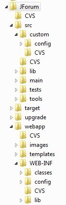
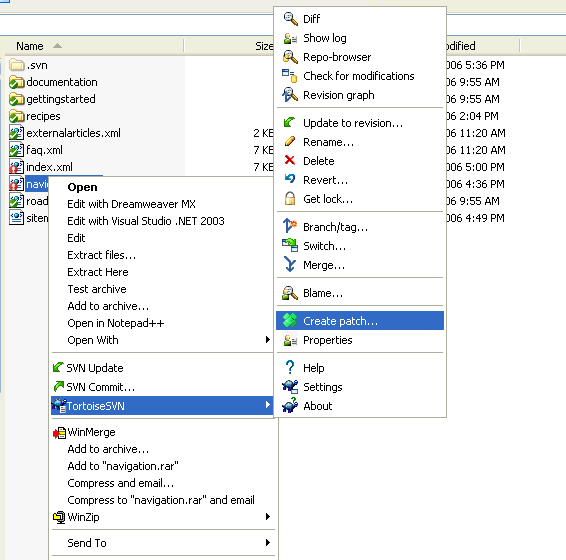

|
|
|
|
|
|
|
Categories
|
Forums
|
Topics
|
Posts
|
|
Users
|
Search
|
Karma
|
Avatars
|
|
BB Code
|
SSO
|
Bookmarks
|
Attachments
|
|
Moderation
|
Emoticons
|
Private Messages
|
Email Notifications
|
|
Forum / Topic
Subscription
|
RSS
|
Customizable Layout
|
Banning
|
|
Captcha
|
Multiple Languages
|
I18n
|
Web Installer
|
|
|
To keep the focus on the essencial part of JForum, not all features are planned to be developed in
the first beta releases of JForum 3. In particular, the following are the functionalities that should be
done first:
|
Categories
|
Forums
|
Topics
|
Posts
|
|
Users
|
Search
|
|
|
Table 1: initial set of features
Please note that this is the core list of features that, initially, require the biggest effort from all
developers. Other features will be added on demand. |
|
|
|
|
|
|
|
Some details
While the coding conventions previously mentioned can be used as a start point to understanding
the rules, here's shown a quick resume of that document, as welll some minor modifications
preffered for JForum 3.
Tabs, no spaces
Use tabs (4 length) instead of spaces when identing the source code. We'll not enter on a full
discussion about that here, as there are many documents available on the Internet. Some prefer
tabs, other prefer spaces, and so in JForum 3 we prefer tabs.
JavaDoc all your methods
Even the private ones. Document it in a concise fashion, as other developers will have to go through
your code. Some people may argue that ...the source code should speak for itself, but usually it's
not that simple. Of course that well made code is essential, but a short overall description of the
method is essential as well. Don't expect everyone to read each line of code to understand what's
going on.
Two great pitfalls regarding documenting source code are over-commenting and cryptic
commenting.
The whole idea behind commenting is to give a hint to next developer of what's going on. Thus, I
suggest the all Java Docs bring a short description of why in addition (or not) of what they do.
Usually focusing on the why and not on the what/how makes comments shorter.
Document well
Always when necessary, specially when you're doing a business logic that may not be obvious at a
first sight.
New lines and spaces
Blank lines and spaces won't make your code run slower, but will make reading the source code
faster. Here's an example:
Wrong
...
for(int i=0;i<100;i++){
if(i%2==0){
System.out.println("X");
}else if(i%3==0){
System.out.println("Y");
}
}
...
Correct
...
for (int i = 0; i < 100; i++) {
if (i % 2 == 0) {
System.out.println("X");
}
else if(i % 3 == 0) {
System.out.println("Y");
}
}
...
|
|
This one is simple: everything should be covered by unit tests. Yes, database code included. As
JForum has a large set of functionalities that must work on different databases, unit testing is
completely essential to ensure that changes made in some part of the code won't affect the rest of
the system.
So far, JUnit 4 is being used as unit testing framework without any problems. TestNG is on the
watch list, tough.
Organization
All tests are located at tests directory, usually following the main package structure with the
TestCase postfixed to the class being tested. For example, the class
net/jforum/dao/ForumDAO.java is covered by the tests located at
test/core/net/jforum/dao/ForumDAOTestCase.java.
Please note that, when using Eclipse, the output directory for the test classes is tests/WEB-
INF/classes instead of the default output directory, which is WEB-INF/classes |
|
|
|
|
|
|
|
|
|
|
|
|
|
|
|
|
|
|
|
|
|
|
Below you can see an overview of JForum 3 directory structure:

Explanation for each directory:
/src
Root directory for the source code
/src/custom/config
Configuration files for third-party libraries, usually. All files in this directory will be sent to
/webapp/WEB-INF/classes when building JForum
/src/lib
Helper libraries not required to run the project, like JUnit and Servle-API.
/src/main
JForum source code itself.
/src/tests
Test cases
/src/tools
Each subdirectory is an helper tool for JForum, like phpbb2jforum and searchIndexer.
/webapp
The Web application. It includes all templates, images, styles, as well the WEB-INF directory.
/webapp/images
General images, like user's avatar and smilies.
/webapp/templates
HTML templates for JForum
/webapp/WEB-INF
The Servlet Container special directory.
/webapp/WEB-INF/config
JForum configuration directory.
/target
Output dir for TestCases, tools and Ant builds.
|
|
We use JIRA to track the project roadmap. It is the best place to submit bugs and patches. Please
do not overuse the issue's comments. If a patch or bug demands a discussion, use the
development forum instead. |
|
|
|
|
|
|
|
Open source project is made of contributions. Anyone can get involved by submitting patches to
the code, documentation or anything else. Reporting bugs and explaining with a good level of detail
how to reproduce it is extremelly important.
Just like other famous projects, we are also under the philosophy of Meritocracy:
The roles and responsibilities that people can assume in the project are based on merit. Everybody
can help no matter what their role. Those who have been long term or valuable contributors to the
project obtain the right to vote and commit directly to the source repository.
After a demonstration of committment, good technical skills and more important good judgment,
you may be invited to join the project as a committer. This happens after someone at the PMC
proposes your name and a vote is started. After the majority of PMC member cast their votes and
there are no vetoes, an invitation is sent.
There are no recipes to join the project. Just subcribe to the mailing list and participate with
opinions, patches and reviews.
Where
JForum development discussion takes place on the development forum. You do not need to
subscribe to the list just to submit a patch or two, but if you want to be involved with Castle
development on a regular basis, you should probably subscribe. It is high- traffic, but threading
tends to be fairly disciplined, so you can ignore conversations you are not interested in. |
|
In order to be able to commit your changes back to the repository, please read the section How to
help, sub-section Ask Developer role.
- Always comment your changes
- Commit code that compiles
- Provide test cases (unit testing, functional testing, acceptance tests etc...)
|
|
To browse JForum source code just point your browser or Subversion client to to
http://svn.jforum.net:443. There isn't any restriction for read-only access, and everyone is allowed
to download the source code. |
|
In order to be able to commit your changes back to JForum repository, you must have a
"Developer" role in the project. JForum developers are allowed to change anything in the repository,
while Guest users are only allowed to browse the contents, but not change it.
To become a Developer in JForum, one is required to actively participate in the project, be either
helping developing the main code or documenting the project. |
|
A patch is a file that uniffies the differences of a target file. It is useful to us as we can see exactly
what you changed, think about the implications and ultimately approve the patch so your changes
are committed to the code repository.
We strongly encourage that you include test cases for your changes. If you need any help on how
to test something, ask for help on the development mailing list.
Creating a patch with TortoiseSVN
After you have finished changing the files you are ready to create a patch file. To do so, right click
the files or the root folder and select TortoiseSVN\Create Patch
Quick Note
If you don't create the patch from the root folder - then please include the path of the files you are
supplying the patch for. JForum contains a lot files, telling a maintainer where to apply your patch
makes their lives easier and also makes it more likely that your patch will be applied quickly.
Quick Note
If your modification includes new files or new folders you must add them before create the patch.
When you add the files you show mark the files for inclusion. To add files or folders with
TortoiseSVN, right click the folder or the files and select TortoiseSVN\Add.
 |
|
|
|
|
|
|
|
|
|
|
|
|
|
|
|
|
|
|
|